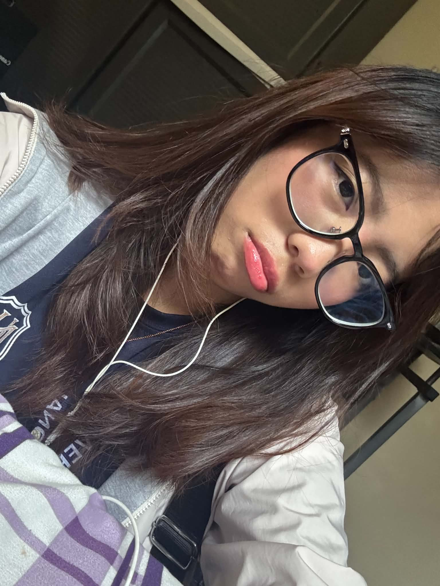

Hi! I'm Jazmyne-Raine, but you can call me Jaz or Raine.
I'm currently a 2nd year BS Information Technology student.
I enjoy learning new things, especially about technology and computers.
I'm interested in web development and designing websites because
I like exploring how they are created and how their designs work.
I have basic knowledge of HTML, and I'm still learning and improving
my skills through our school activities and projects.
My goal is to gain more knowledge and experience in IT and hopefully
create something useful in the future.